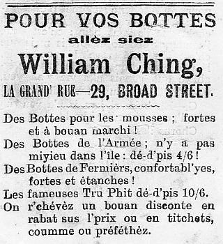

Fort Lauderdale
Florida,
USA,
Lé 26 d'janvyi, 1980.
Moussieu l'Rédacteu,
Dé tchi qu'nou n'vait janmais ichîn en Améthique est un homme atout eune èrdèrne à eune pathe dé braies. J'm'èrsouveins du temps qué, en Jèrri, nou-s-en viyait auve des braies tch'avaient tant d'èrdèrnes et d'clius tch'i' n'y'avait pon fort des braies originnales dé restant. Et y'avait des couôtuthiéthes tch'allaient couôtre "à lus jours" siez les gens. D'habitude ch'tait un jour d'la s'maine siez châque fanmil'ye. I' chèrgeaient un ch'lîn par jour, et y'avait assez d'cauches à racc'moder et d'habits, c'mInses, c'mînsoles et aut' êffets d'hommes et femmes à rabilyi qué v'là tchi fournissait un jour dé travas pour la couotuthiéthe.
Ch'tait un bouan et pliaîsant jour pour la femme dé mênage quand ou v'nait, la couôtuthiéthe, car ayant 'té couôtre siez la grand' partie des vaîthîns, oulle avait eune bouanne idée dé chein tchi s'pâssait dans les fanmil'yes, et les femmes, tchuthieuses dé lus sorte, avaient un mangifique temps à bavarder entouôrre les nouvelles du vaîthinné.
Les jannes Jèrriais d'au jour d'aniet éthaient d'la peine à comprendre comment qu'des pèrsonnes pouvaient vivre sus des gages d'un ch'lîn par jour, et i' faut aver vêtchu y'a huiptante ans pour comprendre des choses dé même. Nou vivait à bouan marchi dans chu temps-là, et les gens tch'allaient travailli à lus jour (voulant dithe à tant par jour) avaient lus dîner et souvent lus thée en fanmil'ye auve les gens siez tchi tch'i' travaillaient; ch'est en tchi i' n'avaient qu'à souangni du maintchein d'lus dêjeuner tchi n'couôtait pon fort quand les gens 'taient satisfaits d'eune beurrée et eune tâssée d'thée.
Dans chu temps-là l's habits duthaient longtemps, car les gens n'pouvaient pon affaûrder d'en acater souvent. Il' en prannaient grand soin, même des habits d'travas. quand un homme èrvénait d'vraitchi dans l'jour, ou d'bâsse-ieau, sa femme lî disait: "Amène-mé ten sotchet d'habits qué j'les mette à dêsaûsser". Et dans p'tit d'temps l's habits, dêsaûssées dans d'ieau douoche, 'taient à stchi sus la lîngne.
Lé fa du Dînmanche duthait d's années. Pendu dans l'armouaithe, bein brîngi en r'vénant d'l'églyise ou d'l'entèrrement, nou peut comprendre sa longue vie. Lé nièr fa à Papa 'tait si vyi tch'il avait l'air vèrdaud. Lé temps v'nait tch'i' dév'nait un deuxième fa pour les cheins tchi pouvaient affaûrder d'en aver un deuxième. Ch't-îlà, 'tait fait sèrvi pour aller en ville ou à l'Assembliée d'Pâraisse, ès êlections ou ès fêtes et les courses. V'là tchi duthait d's années d'vant tch'i' d'vînsse, en fîn d'compte, l'habit d'touos les jours.
Nou peut dithe qué ch'tait la même chose pour bottes et saûlés. I' duthaient longtemps, étout. Lé mousse dé la maîson avait la tâche dé bliatchinner les cheins du Dînmanche pour aller à l'églyise. Ch'tait eune tâche qué j'trouvais duthe mé-même. Lé bliatchîn 'tait dans eune pétite ronde boëte en blianc fé. Nou-s-êcopissait d'ssus et pis nou lé m'ttait sus bottes et saûlés atout un pîncieau ou eune pétite brînge. Pour lé faithe èrlithe i' fallait brîngi dû et longtemps atout eune pus grosse brînge.
Les cordonnièrs dé chu temps-là avaient apprîns lus mêtchi comme i' faut, et i' pouvaient faithe bottes et souliers ieux-mêmes dans lus cordonn'nies. Ch'tait rare qué les vielles gens allîssent en ville acater des bottes ou souliers d'acat. A l'êcole, un tas d'mousses mettaient des bottes à cliou, faits par lé cordonnyi. Lé Sieur Elie Maugi, du Pîngnon dans La Route des Landes, en faîsait d'fanmeuses. Il' 'taient appelées d'même viyant tch'il' avaient quat' ou chînq rangies d'clious atout des rondes têtes, grosses comme des pétits pais d'camp, cachis dans la s'melle, et un fé dans l'talon. V'là tchi duthait longtemps. Quand nou pense qué les mousses des Landes faîthaient c'mîn touos les jours, aller et v'nîn, jusqu'au Haut du Mathais pour aller à l'êcole, i' fallait les caûchi atout d'tchi solide. Et les routes 'taient caûchies auve pièrres câssées et du gravi dans chu temps-là. Et pis à l'êcole ch'tait des jeux comme Les Buttes ("Rounders"), Tireli et Saute Mouton qu'nou jouait dans l'bel lé pus, et ch'tait dû sus les bottes.
V'là tchi m'ramémouaithe qué j'avais dans les tchˆnze ou seize ans (j'fus né en 1891) quand des rondasses en caoutchou pour mett' sus les talons d'souliers fîdrent appathence. Nou l's appelait de "Rubber Heels". Ch'tait sîngne qué l'enduerchissement d'l'îndividu c'menchait dêjà à molli!
George d'La Forge
Viyiz étout: